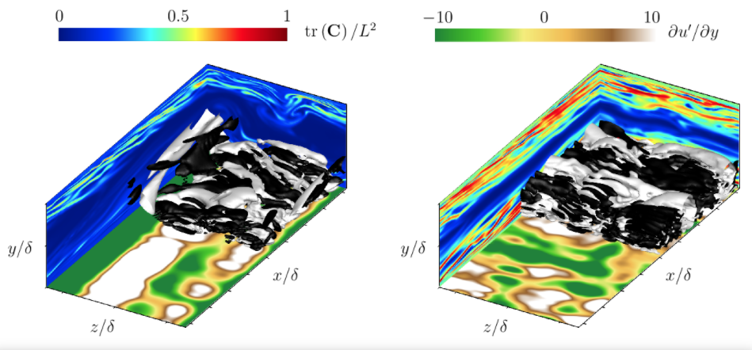
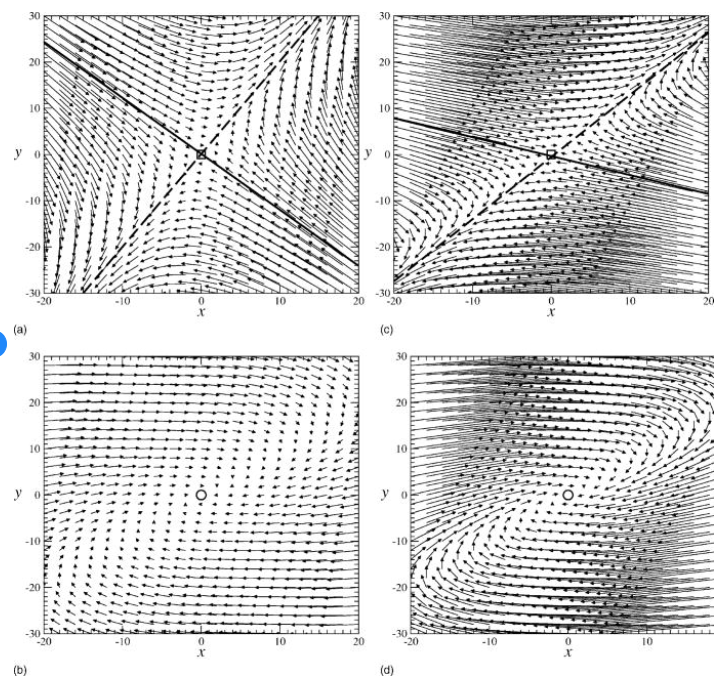
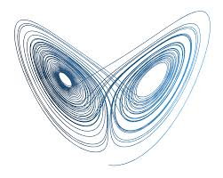
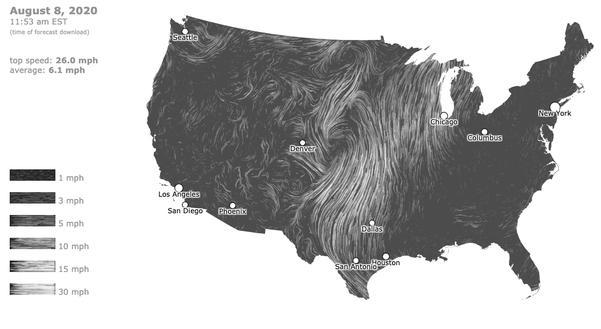

Trees and Geo
MIDS W209: Information Visualization
John Alexis Guerra Gómez | john.guerra[at]gmail.com | @duto_guerra
Andy Reagan | andy[at]andyreagan.com | @andyreagan
https://johnguerra.co/lectures/MIDS_W209_Information_Visualization/09_Trees_and_Geo/
Andy Reagan | andy[at]andyreagan.com | @andyreagan
https://johnguerra.co/lectures/MIDS_W209_Information_Visualization/09_Trees_and_Geo/

Partially based on slides from Tamara Munzner
What We Are Going to Learn
Spatial Data
Idioms: Isosurfaces, Direct Volume Rendering
- Data:
- Scalar spatial field
- One quantitative attribute per grid cell
- Task:
- Shape understanding, spatial relationships
- Isosurface:
- Derived data: isocontours computed for specific levels of scalar values
- Direct volume rendering:
- Transfer function maps scalar values to color, opacity
- No derived geometry
Isosurfaces Example
Vector and Tensor Fields
- Data:
- Many attributes per cell
- Idiom families:
- Flow glyphs:
- Purely local
- Geometric flow:
- Derived data from tracing particle trajectories
- Sparse set of seed points
- Texture flow:
- Derived data, dense seeds
- Feature flow:
- Global computation to detect features
- Encoded with one of methods above
Vector Fields
- Empirical study tasks:
- Finding critical points, identifying their types
- Identifying what type of critical point is at a specific location
- Predicting where a particle starting at a specified point will end up (advection)
Vector Field Example
Name That Dynamical System
Idiom: Similarity-Clustered Streamlines
- Data:
- 3D vector field
- Derived data (from field):
- Streamlines: trajectory particle will follow
- Derived data (per streamline):
- Curvature, torsion, tortuosity
- Signature: complex weighted combination
- Compute cluster hierarchy across all signatures
- Encode: color and opacity by cluster
- Task:
- Find features, query shape
- Scalability:
- Millions of samples, hundreds of streamlines
Streamlines
